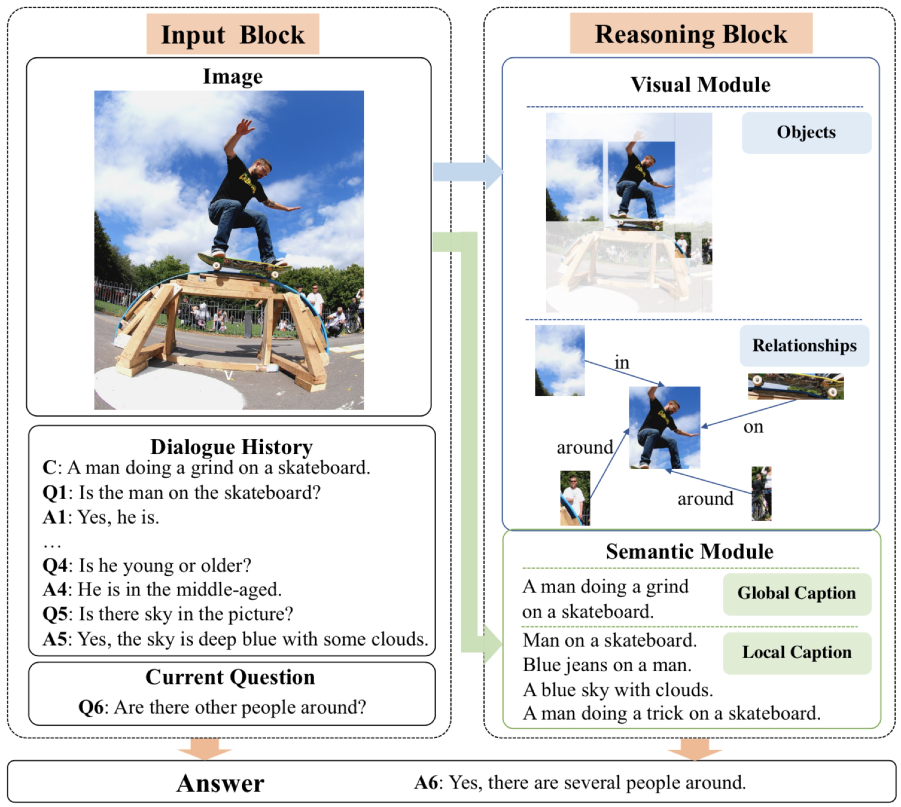
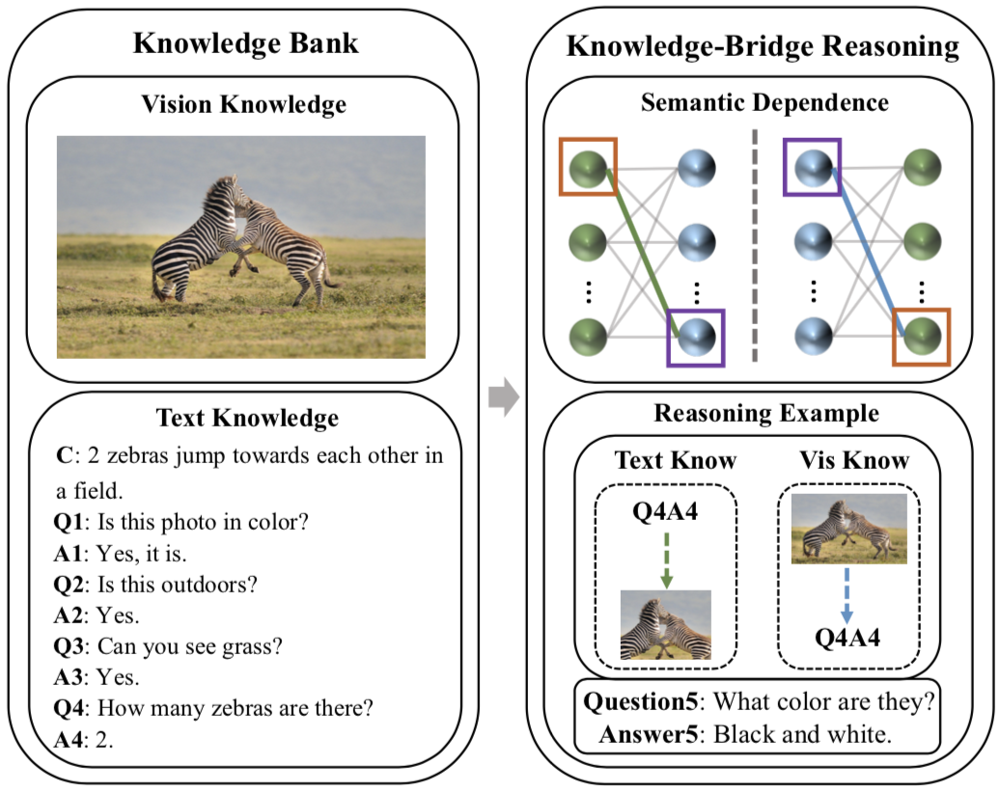
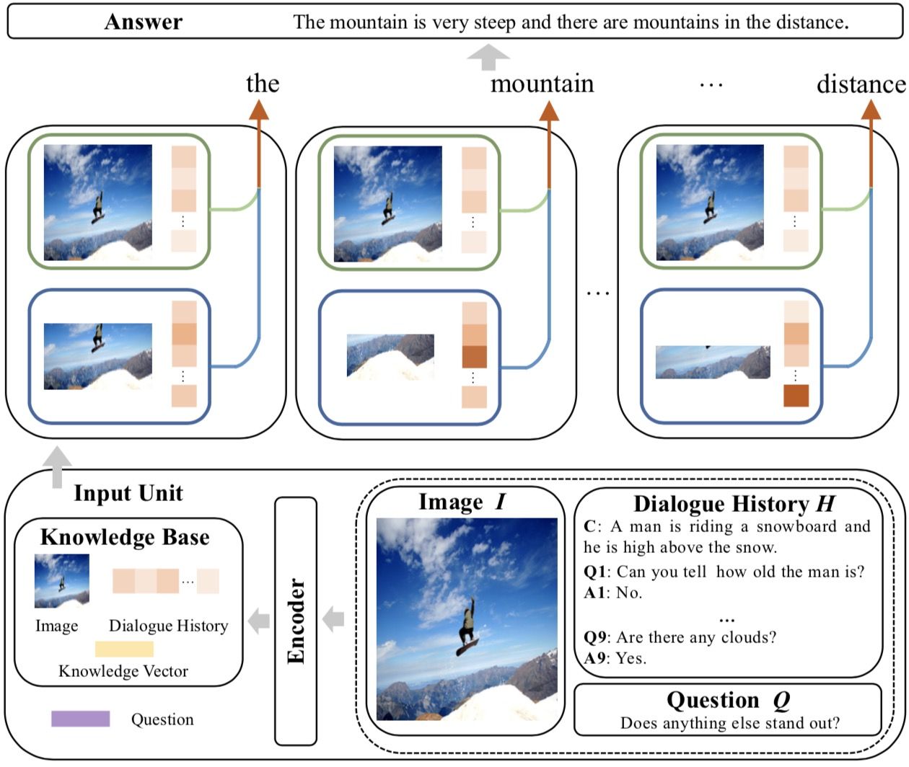

|
M.S. Candidate |

{kind=link}
|
I'm a third-year Master student at School of Automation Science and Electrical Engineering (SASEE), Beihang University (BUAA), supervised by
Prof. Zengchang Qin.
I'm
lucky to have opportunities to collaborate with
Jing Yu
(Professor at Chinese Academy of Sciences),
Qi Wu
(Professor at Adelaide),
Yaobo Liang
(Researcher at MSRA),
Xingxing Zhang
(Researcher at MSRA). Before this, I got my Bachelor's
degree in Automation Science from Northeast Forestry University (2014-2018).
|
|
|
|
|

|
Beihang University |
|
Northeast Forestry University |
|
|
|  |
IEEE Transactions on Image Processing (Impact factor: 9.34) PDF / bibtex |
|  |
ACM MM 2020, Oral paper (Accept rate: 427/1698 = 27.8%, Oral rate: 151/1698 = 8.9%) PDF / bibtex |
|  |
IJCAI 2020 (Accept rate: 592/4717 = 12.6%) PDF / bibtex |
|
AAAI 2020 (Accept rate: 1591/7737 = 20.6%) PDF / bibtex |
|
I'm working with Yaobo Liang
(Researcher at MSRA) at MSRA.
I'm working with
Jing Yu
(Professor at Chinese Academy of Sciences) at Institute of Information Engineering.
I'm working with Wenxiang Shi at HUAWEI.
|
|
|
|
|
|
Website template from here. |